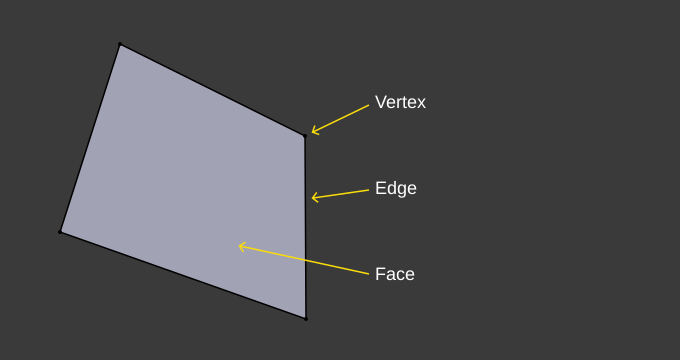
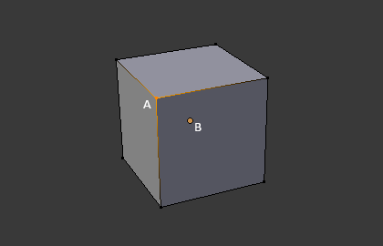
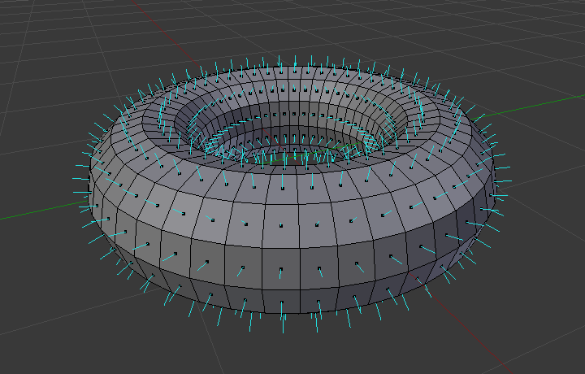
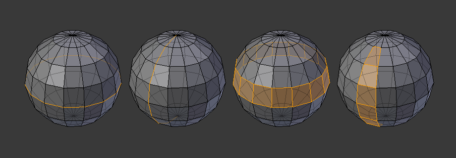

Cấu trúc Mesh¶
Với mesh, mọi thứ đều được xây dựng từ ba thành phần cơ bản: vertex (đỉnh), edge (cạnh) và face (mặt).


Ví dụ về cấu trúc mesh.¶
Vertices¶
Thành phần cơ bản nhất của một mesh là vertex (số nhiều: vertices) — một điểm hay một vị trí đơn trong không gian 3D. Các vertex được hiển thị trong 3D Viewport ở Edit Mode dưới dạng các chấm nhỏ. Các vertex của một object được lưu dưới dạng một mảng tọa độ.
Mẹo
Đừng nhầm object origin với một vertex. Nó trông có vẻ giống nhau, nhưng to hơn và không thể được chọn.

Vertex được đánh nhãn "A"; chấm gốc của object được đánh nhãn "B".¶
Edges¶
Một edge luôn nối hai vertex bằng một đường thẳng. Các edge chính là những "đường dây" bạn thấy khi nhìn một mesh ở chế độ wireframe. Chúng thường không hiện trên ảnh render. Chúng được dùng để dựng các face.
Faces¶
Các face được dùng để dựng bề mặt thực của object. Chúng là những gì bạn thấy khi render mesh. Nếu một vùng không chứa face, vùng đó sẽ trong suốt hoặc không tồn tại trên ảnh render.
Một face được định nghĩa là vùng nằm giữa ba (tam giác), bốn (tứ giác) hoặc nhiều hơn (n-gon) vertex, với một edge ở mỗi cạnh. Các face thường được viết tắt là tris, quads & n-gons.
Tam giác luôn phẳng và do đó dễ tính toán. Ngược lại, tứ giác "biến dạng tốt" nên được ưu tiên cho animation và modeling bằng subdivision.
Normals¶
Trong hình học, normal là một hướng hoặc đường vuông góc với một thứ gì đó, thường là một tam giác hoặc bề mặt, nhưng cũng có thể liên quan đến một đường thẳng, đường tiếp tuyến của một điểm trên đường cong, hoặc mặt tiếp tuyến của một điểm trên bề mặt.
Normals giúp xác định shading của mesh cùng nhiều yếu tố khác.


Trực quan hóa các face normal của một torus.¶
Trong hình trên, mỗi đường màu xanh đại diện cho normal của một face trên torus. Mỗi đường vuông góc với face mà nó nằm trên. Trực quan hóa này có thể được bật, trong Edit Mode, tại panel Mesh Display Viewport Overlays.
Shading¶
Normal của bề mặt đóng vai trò nền tảng trong việc quyết định ánh sáng tương tác với object 3D như thế nào, từ đó ảnh hưởng lớn đến shading của các object đó. Normals có thể được shade mượt hoặc phẳng.
Khi một mesh dùng flat shading, các face được render và hiển thị một cách đồng nhất. Điều này thường được mong muốn cho các object có bề mặt phẳng như cube hay hình chóp.
Khi một mesh dùng smooth shading, các normal được nội suy qua các vertex của mesh đa giác, giúp đạt được sự chuyển tiếp mượt giữa các đa giác kề nhau, tạo ra vẻ ngoài chân thực hơn.
Mặc định các face normal dùng flat shading, tuy nhiên có thể điều chỉnh cho toàn bộ object hoặc cho từng face.
Để điều chỉnh shading của toàn bộ object, hãy dùng:
Shade Smooth -- Đánh dấu toàn bộ object là mượt.
Shade Auto Smooth -- Đánh dấu một phần của object là mượt.
Để quay lại flat shading, dùng Shade Flat.
Shading của object cũng có thể được điều chỉnh theo từng face, edge hoặc vertex.
Custom Split Normals¶
Custom split normals là cách tinh chỉnh/giả lập shading bằng cách chỉ các normal theo hướng khác với các normal mặc định được tự động tính toán. Kỹ thuật này chủ yếu được dùng trong phát triển game, nơi nó giúp bù đắp một số vấn đề do các object low-poly gây ra (ví dụ phổ biến nhất là cây, bụi cây, cỏ low-poly, v.v. và các góc 'bo tròn').
Blender hỗ trợ custom normals trên nền tảng 'smooth fan', được định nghĩa là một tập các face corner lân cận cùng chia sẻ một vertex và được 'nối' với nhau bằng các smooth edge. Điều này có nghĩa là bạn có thể có normal theo từng face corner, theo từng tập face corner lân cận, hoặc theo từng vertex.
Dữ liệu custom split normal được lưu dưới dạng Attribute custom_normal trên Domain của face corner.
Mẹo
Có thể tắt việc tính toán custom split normals để cải thiện hiệu năng. Tùy chọn này nằm trong Cài đặt Simplify Rendering.
Free Normals¶
Free normals là một loại custom normal được lưu trực tiếp dưới dạng vector hướng trong không gian object. Khác với các custom normal truyền thống được định nghĩa tương đối so với geometry xung quanh (được gọi là không gian tangent hoặc corner fan), free normals độc lập với topology của mesh và không dựa vào smooth group hay tính liên kết của edge.
Vì chỉ là các vector đơn giản, free normals có các đặc điểm:
Hiệu quả: Đánh giá nhanh, cải thiện đáng kể hiệu năng viewport so với normal không gian tangent.
Nhẹ: Tốn ít bộ nhớ hơn, đặc biệt có lợi cho các mesh dày đặc hoặc bị instance với số lượng lớn.
Tĩnh: Chúng không tự cập nhật khi mesh bị biến dạng (ví dụ qua modifier hoặc animation), nên phù hợp nhất với geometry tĩnh hoặc các trường hợp hiệu năng là ưu tiên hàng đầu.
Free normals có thể được gán bằng Node Set Mesh Normal ở chế độ Free, và lưu trên domain vertex, face hoặc face corner tùy vào mức độ chi tiết mong muốn.
Chỉnh sửa Custom Split Normals¶
Tham khảo
- Mode:
Edit Mode
- Menu:
- Shortcut:
Alt-N
Có một số công cụ để chỉnh sửa custom split normals. Các công cụ chỉnh sửa custom normal trên mesh có thể ảnh hưởng đến tất cả normal (mặc định), hoặc chỉ những normal được chọn. Để chọn một custom normal gắn với một vertex và face cụ thể:
Đặt chế độ chọn phần tử vừa Vertex vừa Face (dùng Shift-LMB để bật chế độ thứ hai).
Chọn một hoặc nhiều vertex, sau đó chọn một face. Có thể lặp lại để chọn thêm vertex và một face khác, v.v. Sẽ dễ thấy hiệu quả của các công cụ này nhất nếu bạn bật tùy chọn Display vertex-per-face normals as lines trong Edit Mode Overlays.
Xem thêm
Nhập Custom Split Normals¶
Một số công cụ, đặc biệt là các công cụ CAD, thường tạo ra geometry không đều khi chia nhỏ object của chúng thành mesh (các tam giác rất mảnh và dài, v.v.). Normal được tự động tính trên loại geometry này thường gây ra artifact xấu, nên việc có thể nhập và dùng chính normal do công cụ CAD tạo ra là điều quan trọng.
Ghi chú
Hiện tại, chỉ FBX Importer và Alembic Importer mới có khả năng nhập custom normals.
Topology¶
Loops¶

Edge loop và face loop.¶
Edge loop và face loop là các tập hợp face hoặc edge tạo thành các "vòng lặp" liên tục như minh họa trong Hình Edge loop và face loop..
Trong hình trên, các vòng lặp không kết thúc ở pole là vòng lặp khép kín (1 và 3). Chúng bắt đầu và kết thúc tại cùng một vertex và chia model thành hai phần. Vòng lặp có thể là công cụ nhanh và mạnh để làm việc với các vùng liên tục cụ thể của mesh, đồng thời là điều kiện tiên quyết cho animation nhân vật hữu cơ. Để có mô tả chi tiết về cách làm việc với vòng lặp trong Blender, xem: Chọn Vòng lặp.
Ghi chú
Lưu ý rằng các vòng lặp (2 và 4) không đi quanh toàn bộ model. Vòng lặp dừng lại tại cái gọi là pole vì không có cách duy nhất để tiếp tục một vòng lặp từ một pole. Pole là những vertex được nối với ba, năm hoặc nhiều hơn edge. Tương ứng, các vertex nối với đúng một, hai hoặc bốn edge không phải là pole.
Edge Loops
Các vòng lặp (1 và 2) trong Hình Edge loop và face loop. là edge loop. Chúng nối các vertex sao cho mỗi vertex trên vòng lặp có đúng hai vertex lân cận không nằm trên vòng lặp và nằm ở hai phía của vòng lặp (ngoại trừ vertex đầu và vertex cuối trong trường hợp có pole).
Edge loop là một khái niệm quan trọng, đặc biệt trong modeling hữu cơ (subsurface) và animation nhân vật. Khi được dùng đúng cách, chúng cho phép bạn dựng các model với số vertex tương đối ít nhưng trông rất tự nhiên khi dùng làm subdivision surface và biến dạng rất tốt trong animation.
Lấy Hình Edge loop và face loop. trong modeling hữu cơ làm ví dụ: các edge loop đi theo đường nét tự nhiên và các nếp biến dạng của da cùng các cơ bên dưới. Các vòng lặp dày hơn ở những vùng biến dạng nhiều hơn khi nhân vật vận động, ví dụ như vai hoặc gối.
Chi tiết thêm về cách làm việc với edge loop có thể tìm thấy trong Chọn Vòng lặp.
Face Loops
Đây là phần mở rộng hợp lý của edge loop, theo đó chúng gồm các face nằm giữa hai edge loop, như các vòng lặp (3 và 4) trong Hình Edge loop và face loop.. Lưu ý rằng với các vòng lặp không khép kín (4), các face chứa pole không được tính vào face loop.
Chi tiết thêm về cách làm việc với face loop có thể tìm thấy trong Chọn Face Loop.
Poles¶
Xem N-poles & E-poles.
Non-Manifold¶
Xem Non-manifold.